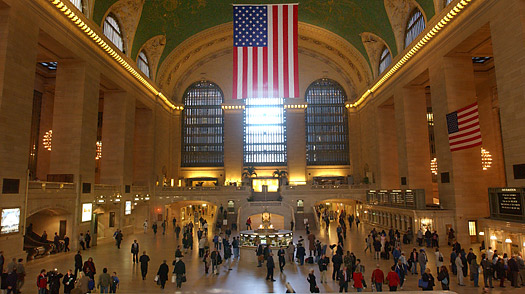

Restaurants

You’re in New York for the first time ever. You’ve got 72 hours and an appetite for everything. Where do you start? That’s a question we get asked a lot, and it’s a hard one to answer. But we’re gonna try so that you don’t return home having only sampled our finest mozzarella sticks from some pub in Times Square. This isn’t meant to be a definitive list of the city’s best restaurants – it’s just what we’d do if we were in your shoes. Speaking of shoes – hopefully you brought something comfortable. You’ve got a lot of ground to cover.
Shopping
Shopaholic? Welcome to New York. From chic boutiques to hipster flea markets to world-famous department stores, NYC has got it all. Let's start with the most famous of them all: You can't go to New York without walking along Fifth Avenue. 5th Avenue runs from north to south all through Manhattan, and the main shopping area can be found from 14th Street up to 59th Street. 5th Avenue is best known for its luxury boutiques and big department stores.
Attractions
Breathtaking views from Top of the Rock, the Empire State Building and One World Observatory. Exhibits from throughout history at the Metropolitan Museum of Art, the Brooklyn Museum and New York Hall of Science. Thrilling performances at Lincoln Center, BAM and Barclays Center. Attractions in NYC suit all tastes.
Map
New York City comprises 5 boroughs sitting where the Hudson River meets the Atlantic Ocean. At its core is Manhattan, a densely populated borough that’s among the world’s major commercial, financial and cultural centers. Its iconic sites include skyscrapers such as the Empire State Building and sprawling Central Park. Broadway theater is staged in neon-lit Times Square.
Travel
Upon arriving in New York City, one of the first things you'll have to do is arrange for transportation. Since most people don't rent cars here, you'll need to take a Yellow Cab, use the coach buses, or call a car service. Transportation info may be found at the airport exits, near baggage claim. Getting around New York City can be very easy or you can make it quite adventuresome. Here are the various ways of getting around,their prices, and their advantages and disadvantages. These are general guidelines for Manhattan but you can use these suggestions to explore Brooklyn, the Bronx, Queens and Staten Island, too!
History
The history of New York begins around 10,000 BC, when the first Native Americans arrived. By AD 1100, New York's main native cultures, the Iroquoian and Algonquian, had developed. European discovery of New York was led by the French in 1524 and the first land claim came in 1609 by the Dutch. Along with the Statue of Liberty, The Empire State Building is New York's most famous landmark. The 381 m tall, 102-storey building was the tallest in the world until the 1 World Trade Center tower rose higher 41 years later.